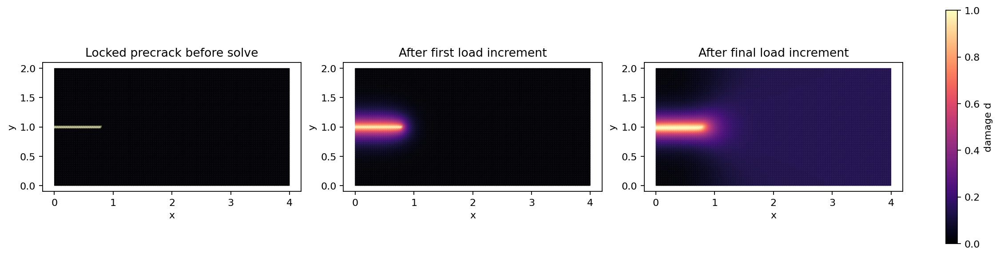

02
Check a derivative
Analytic, autograd and finite differences for a degradation law.
4.7 s · local CPU
Open executed notebook →Understand how cracks emerge from an energy principle. Solve a small fracture problem. Then explore what differentiable computation and learned models can add.
Before changing a parameter, predict its effect. Run a small calculation, inspect the fields, and explain the result using its assumptions and numerical checks.
Each session includes a ten-minute break. Use the slide notes for the hour-by-hour teaching schedule. The interactive diagrams below run entirely in your browser.
A crack creates new surfaces and changes how a solid transmits force. Numerical methods differ in how they represent those surfaces and the separation process.
Original schematic of four crack representations. A formulation can combine several of these ideas.
A continuous damage variable replaces the explicit crack surface. Initiation, turning, merging and branching are represented by the evolution of this internal field.
The damage zone must be resolved by the mesh. The formulation introduces a length scale, an additional field and nonlinear coupling. Load increments, irreversibility, convergence and material calibration still matter.
Which part of your numerical model must change when a crack branches: the mesh, the approximation, the constitutive description, or an internal field?
It depends on the representation. A fitted sharp crack may require remeshing; an enriched approximation changes its enrichment description; a phase-field model evolves its damage field. Each representation requires spatial and temporal resolution appropriate to the physics.
A loaded solid can reduce its elastic energy by damaging, but creating fracture costs energy. A regularised variational model balances these effects. We use d = 0 for intact material and d = 1 for fully damaged material.
The tension–compression split shown here is one modelling choice. The fracture term includes a local cost w(d) and a gradient penalty. Its normalisation is c₀ = 4 ∫₀¹ √w(s) ds. Irreversibility prevents damage from healing when the load falls.
Distance x is measured normal to a straight crack centred at x = 0. These unloaded one-dimensional profiles illustrate regularisation around an isolated, fully developed crack.
w(d) = d, c₀ = 8/3. The standard formulation has a finite elastic threshold and a compactly supported isolated-crack profile.
w(d) = d², c₀ = 2. In the standard formulation, damage can develop from the onset of homogeneous tensile loading. Its isolated-crack profile decays exponentially.
The degradation function g controls how damage reduces selected elastic energy. It is different from the crack-density function w. A common choice is the smooth quadratic law g(d) = (1 − η)(1 − d)² + η, with a small residual stiffness η.
The cubic and rational curves illustrate constitutive choices. A PF-CZM formulation requires consistent choices of g and w, strength calibration, and a suitable solution algorithm.
The quadratic law is simple, smooth, and has zero slope at d = 1. It is widely used with common regularised fracture models. Other laws can help control strength and softening, but they must be selected as part of a consistent constitutive formulation.
At the same value of damage, do two laws necessarily give the same stiffness or damage-driving force?
The stiffness reduction involves g(d), while the derivative of the stored energy with respect to damage involves g′(d) ψ⁺. Two laws can share endpoints while having different interior values and slopes.
Displacement changes the stored energy. Damage changes the stiffness. A staggered scheme alternates the two solves until the coupled update is sufficiently converged. Convergence is assessed after each pass using coupled residual and field-change criteria.
This schematic animation follows the staggered control flow. History-field maxima enforce a chosen history rule; relate that rule to the original irreversibility constraint.
| Question | Two distinct choices | What to inspect |
|---|---|---|
| Is inertia relevant? | Static/quasi-static: equilibrium at each load. Dynamic: mass × acceleration enters the balance. | Loading time scale, waves and kinetic energy. |
| How do we advance time? | Explicit: update from known quantities. Implicit: solve coupled algebraic conditions for the new state. | Stability, accuracy, step size and nonlinear convergence. |
| How are fields coupled? | Staggered: alternate subproblems. Monolithic: solve the coupled system together. | Coupling error and convergence of both fields. |
| How is a linear action evaluated? | Assembled matrix or matrix-free element operations. | Memory, preconditioning and full solve cost. |
These choices can be mixed: explicit dynamics for mechanics can coexist with an implicit damage solve. Both explicit and implicit schemes require time-resolution studies; explicit schemes also impose stability restrictions.
The gradient penalty produces a spatial coupling term resembling diffusion. A transport equation evolves a concentration or temperature with its own balance law; the damage equation follows a fracture energy and irreversibility condition. The shared gradient structure helps compare discretisations; each solver's transport capabilities follow from its supported balance laws.
A finite-element operator can be assembled into a global sparse matrix, or evaluated through element-local operations followed by accumulation into global degrees of freedom. Matrix-free operator actions can be used within iterative linear algebra solvers.
For a trial vector v, each element contributes [vᵢ − vⱼ, vⱼ − vᵢ]. Move one component and compare the two routes.
K = [ 1 -1 0 0
-1 2 -1 0
0 -1 2 -1
0 0 -1 1 ]element 0: nodes [0, 1] element 1: nodes [1, 2] element 2: nodes [2, 3] sum shared-node contributions
Exact operator actions for three unit-stiffness bars. A full solve additionally specifies boundary conditions and linear-solver and preconditioning choices.
Batched element calculations, GPU execution where suitable, reusable automatic-differentiation operations, and convenient connections to neural-network libraries.
Accuracy, memory use, runtime and differentiability depend on the algorithm. Detached tensors, history maxima, active sets, adaptive control flow and iterative solves all require explicit derivative choices.
PyTorch offers a familiar ecosystem for tensors, automatic differentiation, optimisers and learned models. JAX also supports differentiable scientific computing. Compare libraries through supported workflows, validation and complete computational costs.
Create a small specimen, identify its boundaries, apply displacement loading, and examine the evolving damage field. The first notebook executes the actual pinned public PhAST solver.
Geometry and mesh → material and boundary conditions → load increments → damage, displacement and response interpretation.
Measured local notebook: 76.3 s · local CPU

1. Unzip the complete course package.
2. Follow SETUP.md to create the Python environment.
3. Keep notebooks/day2_helpers beside the notebooks.
4. Open notebook 01 and run cells from the top.Where did damage increase? Does the displacement field agree with the applied constraints? What happens to the measured response as damage evolves?
Compare the initial and subsequent fields alongside the load history and numerical diagnostics. A pre-existing crack may already have d = 1; use increments to locate the evolving region.
A differentiable computation links model parameters to an observable and then to a loss. Automatic differentiation applies the chain rule through supported operations. Inverse uniqueness and stability depend on the observations, loading and parameterisation.
The arithmetic here is exact for the displayed scalar model. Notebook 02 checks a local constitutive derivative; notebook 03 recovers an elastic-bar modulus.
Analytic, autograd and finite differences for a degradation law.
4.7 s · local CPU
Open executed notebook →A compact inverse problem with an explicit forward model, an objective and a recovery check.
5.4 s · local CPU
Open executed notebook →Use a different initial guess or fewer observations. Does a low loss still recover the original parameter?
Several parameter values can explain insufficient or noisy observations. Gradient correctness, optimiser convergence and parameter identifiability are separate questions. Examine each before interpreting recovery physically.
A saved model's interface specifies compatible inputs, normalisation, geometry representation, output meaning, dtype and device.
For this illustration, d previous = 0.25 and the reference equation is r(d) = d − 0.60 = 0. PhAST assessments use the configured damage operator and its tolerances.
An MLP and an RBF can share a contract when they use the same features and output definition. A CNN needs grid mappings; a GNN needs graph construction; an operator model needs its specified domain and query representation.
Projection enforces bounds and history. Equilibrium requires assessment of the appropriate physical residual, with a reference correction or fallback when the candidate fails.
factory(checkpoint, device, options) → predictor
predictor.predict(context) → DamagePrediction or nodal damage tensor
context → state, mesh, material information, device, dtype
adapter → feature construction, normalisation, graph/grid mapping
solver → configured projection, assessment and correction/fallbackThe public adapter is an inference interface and can execute with detached state and gradients disabled. Training a model through a time-dependent simulation requires a separately supported differentiation route. Notebook 05 applies the assessment principle to a scalar Helmholtz teaching equation.
Dataset aggregation addresses the mismatch between training on reference trajectories and using a model on its own evolving states. Reference labels have a cost. Evaluate a new model on separate rollouts and count data generation, prediction, assessment and correction in runtime comparisons. Assess successive aggregation rounds using fixed held-out rollouts to examine convergence.
Fit small compatible models, preserve the metadata and inspect held-out predictions.
9.5 s · local CPU
Open executed notebook →Reject an incompatible input and use a reference correction when a proposal fails.
5.2 s · local CPU
Open executed notebook →Use the HTML chapters for derivations, exercises and worked answers; the notebooks for experiments; and the slide deck for a visual route through the material. All browser explanations and executed notebook outputs are included locally.
For the solver, installation documentation, issue reporting and contribution guidance, visit CEMS-Lab/PhAST. Include a minimal example, environment, expected behaviour and actual behaviour when reporting a problem. Cite the software and associated research using the repository's current citation guidance.
For the larger benchmark and inverse-analysis context, read the public PhAST preprint by Ani and colleagues. Its research calculations are separate from the small, timed classroom exercises in this package.